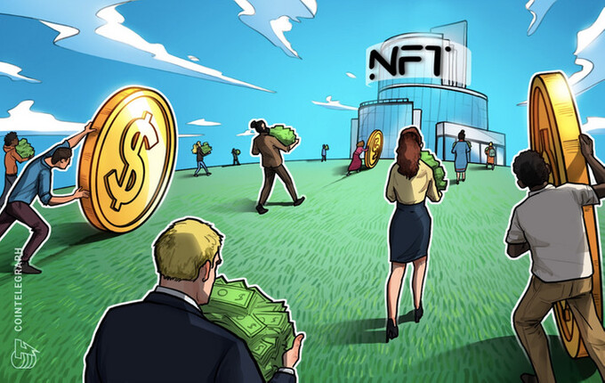

Após zoeira, Zuckerberg atualizará gráficos do metaverso da Meta
O CEO da Meta, Mark Zuckerberg, anunciou nesta sexta-feira (19) que serão lançadas em breve melhorias nos gráficos dos avatares do Horizon Worlds, plataforma do metaverso da empresa
Leia mais

Tragédia de Mariana leva aluno a criar tecnologia para despoluir rios
Não tem como passar incólume. Com a maior tragédia ambiental do Brasil ocorrendo literalmente em seu quintal, a família tinha uma roça na área destruída pelo rompimento da Barragem do Fundão e o pai dele, que nada sofreu, era funcionário da mineradora Samarco, William Pessôa, então estudante de engenharia, tomou a decisão. “Era o momento de parar de pensar só no problema e descobrir soluções.
Leia mais

Brasil já é o 2º em ranking global de usuários de NFT
O país ocupa o segundo lugar no ranking global de usuários de NFT, segundo a consultoria alemã Statista, ficando atrás somente da Tailândia e à frente de países como Estados Unidos, China, Canadá e Alemanha
Leia mais